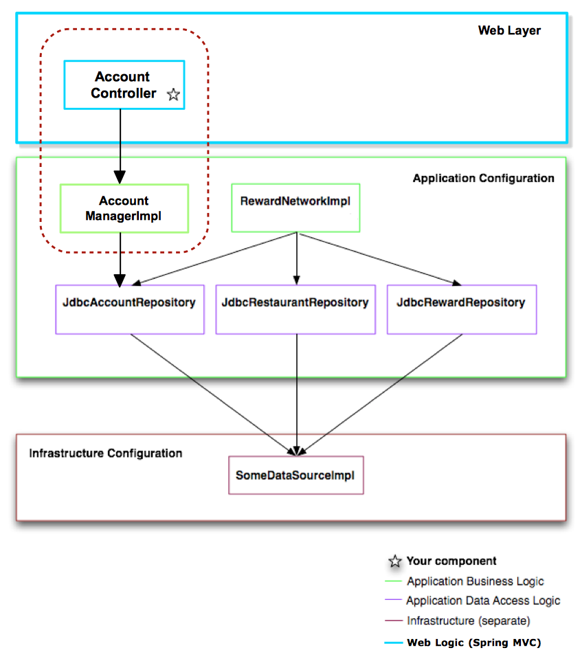
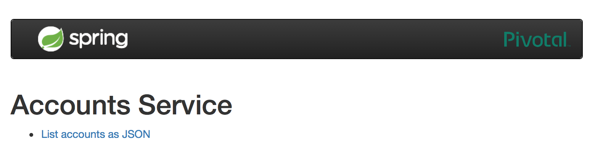

Purpose
In this lab you will implement a Spring MVC REST Controller to fetch account information and return results to the user.
Learning Outcomes
What you will learn:
-
How to set up required Spring MVC infrastructure with Spring Boot
-
How to expose Controllers as endpoints mapped to web application URLs
Specific subjects you will gain experience with:
-
Spring Boot for Web
-
@RestController
You will be using the 36-mvc project.
Estimated time to complete: 20 minutes.
Use Case
For this and subsequent labs we have added account management functionality to the Rewards application.
An AccountManager service-layer class has been added for fetching
account details.
Later we will extend it to support updating accounts.
The new functionality is shown inside the red dotted line in this diagram:

Quick Instructions
If you are already knowledgeable with the lesson concepts, you may consider jumping right to the code, and execute the lab in form of embedded TODO comments. Instructions on how to view them are here.
If you aren’t sure, try the TODO instructions first and refer to the lab instructions by TODO number if you need more help.
Instructions
You will start with the mvc project.
Navigate to that project now in your IDE.
Check the Project is Working
TODO-01 : Open the pom.xml and have a quick look at the
dependencies you are using.
In particular you should see the Spring Boot starters for:
-
Web - This will allow Spring Boot setup the full Spring MVC environment for our new controller to use.
-
Devtools - Enables automatic restart of the application whenever you change a Java file or resource.
-
JPA - For convenience the AccountManager is implemented using JPA to access the account table in the database.
-
Mustache - The home page is a minimal web-page just to show the application is working, implemented using server-side rendering and Mustache templates. No need to worry about this, it is not part of the lab.
TODO-02 : Time to run the application.
-
Run it as a Java or Spring Boot application.
-
Once it is running navigate to http://localhost:8080 in your browser. You should see a page like this:

The "List accounts" link does not work yet.
-
If you are interested, the original HTML is in
src/main/resources/templates/index.html.
Adding a Controller
TODO-03 : Writing the AccountsController
-
This class is partially implemented for you. Open it now. Note that the
AccountManageris already available - it will be injected by Spring when the controller is instantiated. -
Annotate this class so Spring MVC knows it is a controller for handling REST requests.
TODO-04 : Make the accountsList Method RESTful
- Add a mapping for
/accounts- what HTTP method are we using? So what annotation should you use?
TODO-05 : Implement the accountsList Method
-
Use the
accountManagerto fetch all the accounts and return them from the method. -
Save your changes and wait for the application to restart (Spring Boot Devtools causes the restart automatically).
-
Either:
-
Return to the home-page in your browser and click on the "List accounts in JSON" link.
-
Or using curl or Postman make a GET request to http://localhost:8080/accounts.
-
-
If you see the accounts in JSON format all is well.
You might find it useful to add JSON pretty-print capability to your browser.
- Chrome: Do a search for "Chrome JSON Editor"
- Firefox: Enabled by default.
- Edge: Do a search for "JSON Formatter for Edge"
- Internet Explorer: No extra software is required, just a registry change - see https://www.codeproject.com/Tips/216175/View-JSON-in-Internet-Explorer
TODO-06 : Stop the Application.
- We will be making several changes and running tests and don't need Devtools to keep restarting our application when we are not using it. Stop the application now.
TODO-07 : Test the Controller.
-
A unit test for our Controller has already been written for you. It uses a Stub
AccountManagermanaging a single testAccount. -
Open
AccountControllerTestsand run its tests now. It should pass. -
Strictly speaking we should have tested the Controller before running the application, but as the application was already running we exercised it first. This is not normal development practice - always run tests first!
Fetching Individual Accounts
Your next task is to add a new Controller method to fetch just a single account by its entity id, test the method works and then run the application.
This time we will adopt a true TDD (Test Driven Development) approach.
TODO-08 : Add a New Test.
-
You should already have
AccountControllerTestsopen. Scroll down totestHandleDetailsRequest()and add the code to invoke the new method on the controller and verify the results as instructed by the TODOs. -
Note that the test will not compile because
AccountsController.accountDetails()does not exist yet.
TODO-09 : Add a new Controller Method.
-
Add a new method
accountDetailsto the `AccountController class. -
Implement it as described by the TODOs. The required entityId will be a URI template parameter and the IURL to map is therefore
/accounts/{entityId}.
TODO-10 : Test the new Controller Method.
-
Return to
AccountControllerTestsand remove the@Disabledannotation. -
Run the tests again. Both should pass. Make any fixes until the tests pass.
TODO-11 : Rerun the Application.
-
Using your IDE, run the code as a Java or Spring Boot application.
-
Using your Browser, Postman or
curltry the following URLs- http://localhost:8080/accounts/0
- http://localhost:8080/accounts/1
TODO-12 : Change Port.
-
Go to application.properties and set the Spring Boot property to make the server listen on port 8088.
-
Once the server restarts, try going to http://localhost:8088. If you can see the home page again, all is well.
Congratulations you have finished the lab.
Summary
What have we achieved:
-
Implemented a REST Controller.
-
Tested it using simple JUnit unit tests.
-
Run the application to validate it using an HTTP client.
Congratulations, you have completed the lab!